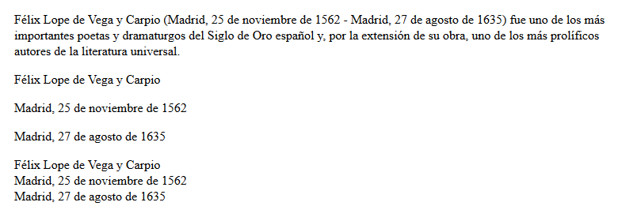
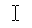
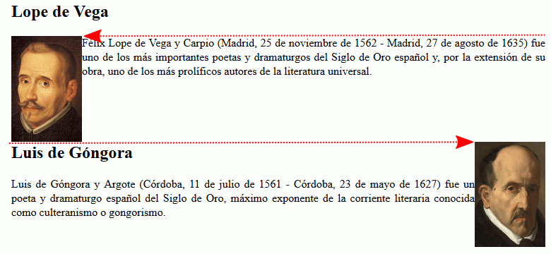
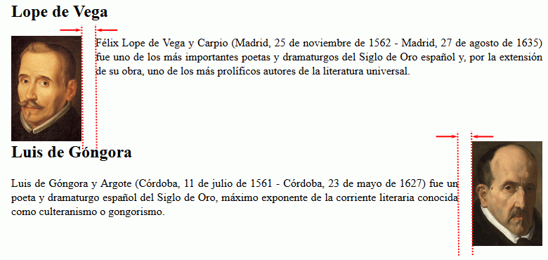

Identificar elementos html
En general, para identificar los elementos html utilizados en un ejercicio se debe desactivar la hoja de estilo en Firefox y elegir el menú .
Identificar varios párrafos <p> consecutivos
La separación entre líneas de un bloque de texto es menor que la separación entre bloques consecutivos, lo que permite identificar bloques de texto consecutivos.
En el ejemplo siguiente se muestran varios párrafos <p>.

Si comparamos las separaciones entre líneas, es fácil ver que hay líneas más juntas que otras.

Las líneas que están más juntas pertenecen al mismo párrafo <p>, mientras que las líneas más separadas pertenecen a párrafos <p> distintos. El ejemplo anterior contiene por tanto cinco párrafos <p>.

Identificar la etiqueta de salto de línea <br />
En un bloque de texto sin justificar, el texto ocupa todo el espacio disponible en la pantalla, es decir, el texto se extiende del extremo izquierdo al extremo derecho (salvo la última línea del bloque, que termina antes porque tiene menos caracteres).
Pero en algunos casos, las líneas de un bloque no llegan al final de la línea, sino que se produce un salto de línea dentro del bloque. Eso se debe a la etiqueta <br />.
En el ejemplo del apartado anterior (Identificar varios párrafos <p> consecutivos), el último párrafo presenta esa situación: el texto que cabría perfectamente en una sola línea se muestra en tres líneas. Eso delata la presencia de etiquetas <br /> al final de la primera y segunda línea.
El código fuente html del ejemplo anterior sería el siguiente:
<p>Félix Lope de Vega y Carpio (Madrid, 25 de noviembre de 1562
- Madrid, 27 de agosto de 1635) fue uno de los más importantes
poetas y dramaturgos del Siglo de Oro español y, por la extensión
de su obra, uno de los más prolíficos autores de la literatura
universal.</p>
<p>Félix Lope de Vega y Carpio</p>
<p>Madrid, 25 de noviembre de 1562</p>
<p>Madrid, 27 de agosto de 1635</p>
<p>Félix Lope de Vega y Carpio<br />
Madrid, 25 de noviembre de 1562<br />
Madrid, 27 de agosto de 1635</p>
Identificar elementos de texto en línea
Los navegadores resaltan gran parte de los elementos de texto en línea utilizando negrita, cursiva o de otras formas, y no resaltan algunos elementos de ninguna manera. Como hay varias etiquetas que se resaltan de la misma manera, para identificarlas hay que fijarse en la información que contiene la etiqueta.
| Negrita | Cursiva | Nada | Otros |
|---|---|---|---|
|
<strong> (importante) <b> (relevante, marcas) |
<em> (énfasis) <cite> (obra) <dfn> (definición) <i> (tecnicismo) |
<span> (otros) <time> (fecha / hora) |
<small> (reducida) <s> (tachado) <q> (comillas) <abbr> (si title, subrayado trazos) <kbd> (monospace) <sub> (subíndice) <sup> (superíndice) <mark> (fondo amarillo) |
Tamaño de elementos de bloque y de elementos en línea
El tamaño de los elementos de bloque se determina de forma diferente en cada dimensión:
- en horizontal, depende del espacio disponible, es decir, el elemento de bloque ocupa todo el espacio disponible.
- en vertical, depende del contenido del elemento, es decir, el elemento de bloque ocupa el espacio que se necesita para alojar el contenido.
El tamaño de los elementos en línea se determina de la misma manera en ambas dimensiones: el elemento ocupa el espacio necesario para alojar el contenido, primero en horizontal y luego en vertical.
Podemos ver la diferencia en el siguiente ejemplo:
<p class="fondo">Governments of the Industrial World, you weary giants of flesh and steel, I come from Cyberspace, the new home of Mind. On behalf of the future, I ask you of the past to leave us alone. You are not welcome among us. You have no sovereignty where we gather.</p>
<p><span class="fondo">Davos, Switzerland. February 8, 1996</span></p>
.fondo {
background-color: hsl(180, 50%, 80%);
}
En el primer párrafo el color de fondo está asignado al elemento de bloque <p>, por eso el color de fondo se extiende de un extremo a otro de la pantalla.
En el segundo párrafo el color de fondo está asignado al elemento en línea <span>, por eso el color de fondo abarca únicamente los caracteres.
Distinguir entre imágenes insertadas y caracteres
Habitualmente, las imágenes que se ven en una página web son realmente imágenes (elementos <img /> o <svg>), pero en algunos casos pueden ser en realidad caracteres (más exactamente, entidades de carácter o numéricas), como muestra la página de ejemplo siguiente. En este ejemplo se ven dos ciclones, pero uno de ellos es el carácter 🌀 y el otro es una imagen insertada en el texto.
Para distinguirlos, basta situar el cursor sobre la presunta imagen:
- si es una imagen, el cursor seguirá siendo la flecha (
 )
) - si se trata de texto, el cursor se convertirá en el cursor de texto ()
También, si hacemos clic derecho sobre la presunta imagen:
- si es una imagen, el menú contextual mostará opciones propias de las imágenes (ver imagen, guardar imagen, etc., el texto y la posición en el menú contextual depende del navegador)
- si se trata de texto, el menú contextual no mostrará esas opciones
Nota: No se debe concluir si la presunta imagen es un carácter o una imagen basándose en la sencillez de la imagen, ya que eso depende de la fuente empleada por el navegador o incluso del carácter.
Distinguir entre imágenes insertadas e imágenes de fondo
Las imágenes que se ven en una página web pueden ser imágenes insertadas (elementos <img /> o <svg>) o pueden tratarse imágenes de fondo, como muestra la página de ejemplo siguiente. En este ejemplo se ven dos ciclones, pero uno de ellos es una imagen insertada en el texto y el otro es una imagen de fondo.
Para distinguirlos, bastaría con desactivar la hoja de estilo. La imagen de fondo dejaría de verse.
También, si hacemos clic derecho sobre la presunta imagen:
- si es una imagen insertada, el menú contextual mostará opciones propias de las imágenes (ver imagen, guardar imagen, etc.), aunque las opciones mostradas y su posición en el menú contextual depende del navegador
- si es una imagen de fondo, el menú contextual mostrará opciones propieas de las imágenes de fondo (ver imagen de fondo, guardar fondo como, etc), aunque las opciones mostradas y su posición en el menú contextual depende del navegador
Identificar imágenes flotantes
En XHTML 1 las imágenes eran elementos en línea, es decir, que tenían que estar estar incluidas en elementos de bloque (<p>, <h1>, <div>, etc.). En HTML 5 las imágenes se incluyen en la categoría de contenido incrustado (en inglés, embedded) y ya no es necesario incluirlas en elementos de bloque, aunque en la mayoría de casos, suele ser conveniente hacerlo.
Posición de inserción de las imágenes
Si las imágenes son imágenes flotantes, hay que deducir dónde se han insertado el elemento <img /> en la página web. Normalmente es suficiente fijarse en el borde superior de la imagen y en qué texto está alineado horizontalmente con ese borde.
- En el ejemplo siguiente, la primera imagen está alineada con el párrafo <p> y la segunda imagen está alineada con el título <h2>, como se puede deducir fijándose en el texto alineado con la parte superior de las imágenes.

En el código fuente de la página, los elementos <img /> se encuentran al principio del párrafo y del título, respectivamente.
<h2>Lope de Vega</h2> <p><img src="lope-de-vega.jpg" alt="Retrato de Lope de Vega" />Félix Lope de Vega y Carpio (Madrid, 25 de noviembre de 1562 - Madrid, 27 de agosto de 1635) fue uno de los más importantes poetas y dramaturgos del Siglo de Oro español y, por la extensión de su obra, uno de los más prolíficos autores de la literatura universal.</p> <h2><img src="luis-de-gongora.jpg" alt="Retrato de Luis de Góngora" />Luis de Góngora</h2> <p>Luis de Góngora y Argote (Córdoba, 11 de julio de 1561 - Córdoba, 23 de mayo de 1627) fue un poeta y dramaturgo español del Siglo de Oro, máximo exponente de la corriente literaria conocida como culteranismo o gongorismo.</p>
Hacer imágenes flotantes con clases
A continuación hay que aplicar el posicionamiento flotante.
- En el ejemplo anterior, como una imagen está a la izquierda y la otra a la derecha, necesitaremos definir dos clases en la hoja de estilo:
img.izquierda { float: left; } img.derecha { float: right; } - ... y asignar las clases en la página web:
<h2>Lope de Vega</h2> <p><img src="lope-de-vega.jpg" alt="Retrato de Lope de Vega" class="izquierda" />Félix Lope de Vega y Carpio (Madrid, 25 de noviembre de 1562 - Madrid, 27 de agosto de 1635) fue uno de los más importantes poetas y dramaturgos del Siglo de Oro español y, por la extensión de su obra, uno de los más prolíficos autores de la literatura universal.</p> <h2><img src="luis-de-gongora.jpg" alt="Retrato de Luis de Góngora" class="derecha" />Luis de Góngora</h2> <p>Luis de Góngora y Argote (Córdoba, 11 de julio de 1561 - Córdoba, 23 de mayo de 1627) fue un poeta y dramaturgo español del Siglo de Oro, máximo exponente de la corriente literaria conocida como culteranismo o gongorismo.</p>
Limitar el posicionamiento flotante
Al dar posicionamiento flotante a un elemento, el contenido posterior se sitúa a su lado mientras haya espacio disponible.
- En el ejemplo anterior, al dar posicionamiento flotante a las imágenes, el apartado dedicado a Luis de Góngora se sitúa a la derecha de la imagen de Lope de Vega.

Si se quiere que a partir de un elemento, el contenido no se sitúe al lado de la imagen flotante, hay que dar la propiedad clear a ese elemento.
- En el ejemplo anterior se podría asignar la propiedad clear al elemento <h2> en la hoja de estilo:
h2 { clear: both; }
Márgenes de las imágenes
- En el ejemplo siguiente, la primera imagen tiene un margen derecho mientras que la segunda imagen tiene un margen izquierdo.

En la hoja de estilo se asigna en cada clase el margen correspondiente:
img.izquierda { float: left; margin-right: 20px; } img.derecha { float: right; margin-left: 20px; } - Pero ni la primera imagen tiene margen izquierdo, ni la segunda margen derecho, puesto que está alineada con el texto anterior o posterior.

- En el ejemplo siguiente, se ha añadido un margen entre las imágenes y el texto posterior.

En la hoja de estilo se puede asignar el margen a la etiqueta sin clase, para que afecte a todas las imágenes
img { margin-bottom: 20px; }
Distinguir la etiqueta <span> de otras etiquetas de texto en línea
La hoja de estilo predeterminada de los navegadores no aplica ningún estilo a la etiqueta <span>, mientras que sí que lo hace con el resto de etiquetas en-línea. Así, si una porción de texto pierde completamente el formato al desactivar la hoja de estilo, es que se trata de una etiqueta. <span>.
Distinguir la etiqueta <hr /> de un elemento con la propiedad border
Los bordes dejan de verse al desactivar la hoja de estilo. Así que si una línea desaparece al desactivar la hoja de estilo, es que se trataba de un borde.